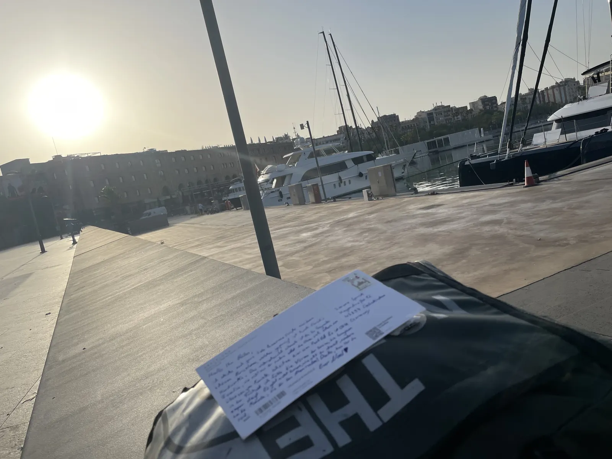
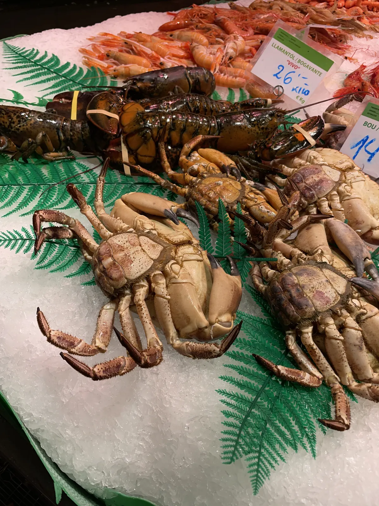
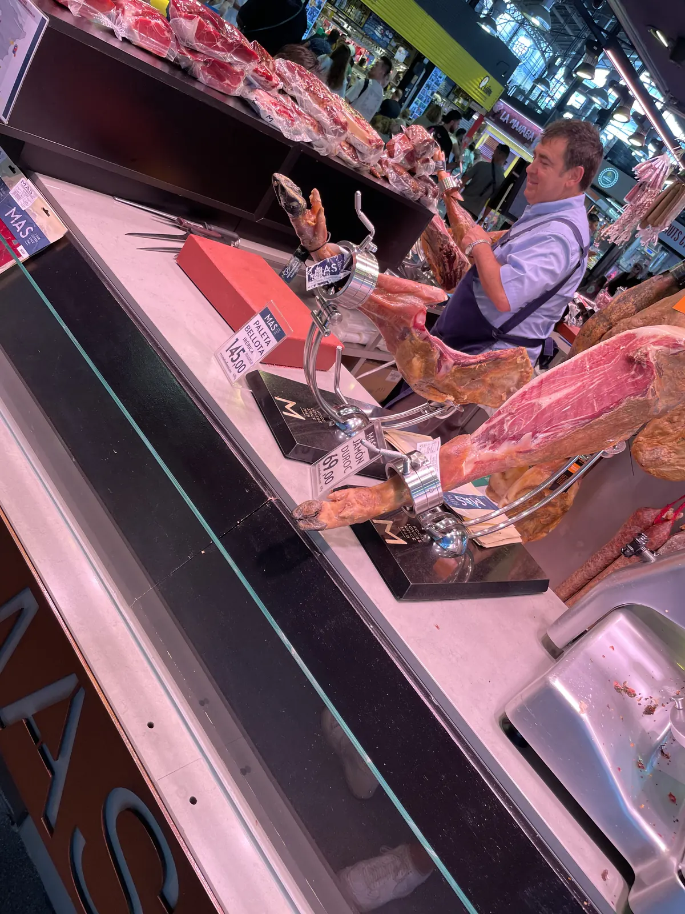
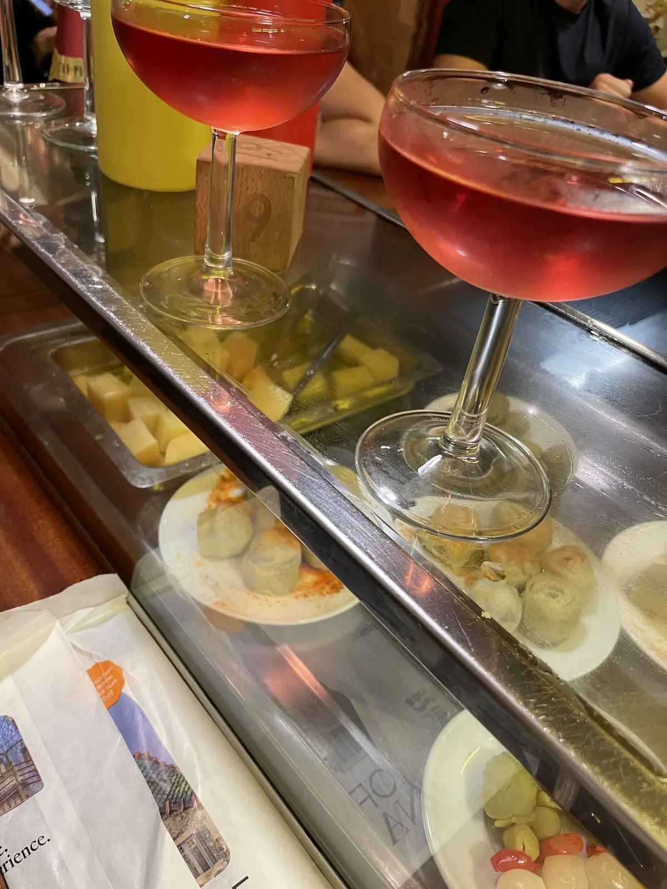

🇪🇸 Barcelona Guide: 14 places – Port Vell, Sagrada Família, Bunkers del Carmel & hidden gems

Table of contents
Barcelona is beach and big city in one, plus Gaudí’s houses that look as if they grew rather than were built. People speak Catalan, drink vermouth at midday and eat late – hardly a restaurant is full before 9 pm.
Prices and times are guidelines (2026).
🗺️ Map: all 12 places
My story in Barcelona
There are trips you take – and trips that do something to you. Barcelona 2023 was the second kind for me. At 7 am I sat alone at Port Vell writing postcards while my friends were already at the airport. Barcelona is the trip that changed everything for me – because of a single quiet morning. My advice: set your alarm once, go to the harbour before the city wakes up – and write someone a postcard.
This guide contains affiliate links (GetYourGuide, Omio). If you book through them I earn a small commission – you never pay a cent more. Prices and opening hours change – double-check before you go.
🆓 Free things to do
7 places in Barcelona you can enjoy without an entry fee or completely free (for some, only a part costs extra, e.g. a tower or museum):
At a glance
Getting to Barcelona and around
Barcelona has a large airport with bus and train links to the city; check current connections beforehand. In town the metro, bus and walking are enough. Beware of pickpockets in tourist zones.
El Prat airport lies about 20 kilometres from the centre; Aerobus, train (R2) and taxi take you into the city (check prices and timetables beforehand). In the city you travel by metro, bus and tram; a multi-trip card pays off. The city centre is easy to explore on foot.
Beware of pickpockets in the metro, on La Rambla and at sights.
1. Must-sees
Port Vell in the early morning🆓 Free to experience
Sitting alone at the harbour at 7 am writing postcards – that was my moment.

Sagrada Família
Gaudí’s basilica has been under construction since 1882. My tip: book tickets online early.
The Sagrada Família is Antoni Gaudí’s masterpiece and a basilica that has been under construction since 1882. Inside, the columns look like a forest of stone, and light falls in blue, green, red and gold through the stained-glass windows. Depending on the ticket you can also climb one of the towers (check tickets and times online beforehand and book early).
The morning is quieter; in the afternoon warm light falls on the west side. Plan at least one to two hours.
Tip: Book early online and plan the morning.
Park Güell🆓 Free to experience
Park Güell is a Gaudí park on a hill with colourful mosaics, undulating benches, colonnades and a view over the city. Entry to the monumental zone is charged and time-limited; the rest of the park is freely accessible (check current rules beforehand).
Come early in the morning and plan for paths and slopes. Book tickets online.
Tip: Book tickets online and come early.
Gothic Quarter & La Rambla🆓 Free to experience
The Gothic Quarter consists of narrow medieval lanes around the cathedral, squares like Plaça Reial and hidden courtyards. La Rambla is the well-known promenade, which is crowded and touristy; watch for pickpockets. Side streets are often nicer than the main street.
Walk through the lanes in the evening and try tapas away from La Rambla.
Tip: Keep valuables safe and go into the side lanes.
La Boqueria & Sant Antoni market
La Boqueria is the city’s most famous market hall with fruit, juices, ham, seafood and sweets. It is very touristy; the stalls at the edge are more expensive. A little further west lies the Mercat de Sant Antoni, a less touristy market, on Sundays with a book market.
Try jamón and fresh juice; compare prices. Prices change.
Tip: Try jamón and switch to cheaper stalls.


Casa Batlló & Casa Milà (La Pedrera)
On Passeig de Gràcia stand two Gaudí houses: Casa Batlló with a bone-like façade and colourful ceramic roof and Casa Milà (La Pedrera) with a wave-shaped stone façade and a roof terrace with chimneys. You can visit both; tickets are expensive but often come with an audio guide.
Choose one if you have little time. Check prices and times beforehand.
Tip: Choose one house if time is short.
Barceloneta, beach & tapas🆓 Free to experience
Barceloneta is the former fishing quarter with city beach, promenade and small tapas bars. The beach is crowded in summer; watch your things. Try patatas bravas, pimientos de Padrón, croquetas and seafood.
Meals start late in Spain: lunch often after 2 p.m., dinner after 9 p.m.
Tip: Eat late like the locals and watch your things.

2. Hidden gems
Bunkers del Carmel💎 Hidden gem🆓 Free to experience
To the Bunkers del Carmel for sunset: a former anti-aircraft position with a 360° view over the city.
Tip: The climb is steep; bring water.
Bar Marsella – absinthe since 1820💎 Hidden gem
An absinthe bar from 1820 in the Raval. No music, old mirrors, marble tables – unpolished charm instead of an Instagram bar.
Speakeasy behind a fridge door💎 Hidden gem
A speakeasy behind a fridge door is on my map – check there for the current name and reservations.
Gràcia – squares & cafés💎 Hidden gem🆓 Free to experience
Gràcia was once an independent village and today has small squares, boutiques, cafés and bars. On Plaça del Sol and Plaça de la Virreina locals sit outside. In August the district celebrates the “Festa Major de Gràcia” with decorated streets (check dates beforehand).
A good place for an afternoon away from the crowds.
Tip: Spend the afternoon on one of the squares.
Montjuïc – gardens, fountain & view💎 Hidden gem🆓 Free to experience
Montjuïc hill offers gardens, museums, the castle and the Magic Fountain with its light and water show in the evening (check times beforehand). You reach it by cable car, bus or on foot via escalators. The view over harbour and city is worthwhile.
Come in the late afternoon and stay until evening.
Tip: Come in the late afternoon and stay until evening.
Sant Pau – Art Nouveau hospital💎 Hidden gem
The Hospital de Sant Pau is a UNESCO World Heritage complex by the architect Domènech i Montaner with pavilions, mosaics and gardens. It is less crowded than the Sagrada Família, which lies at the end of the avenue. You can visit the complex (check times and prices beforehand).
A good tip for architecture fans.
Tip: Combine Sant Pau with the Sagrada Família.
Day trip: Montserrat or Sitges
Montserrat is a mountain range with striking rock formations and a monastery, about an hour from Barcelona (rack railway or cable car; check timetables beforehand). Sitges is a seaside resort on the coast with beach and white old town, easy to reach by train.
Plan a full day. Take water and a jacket.
Tip: Start early and plan a full day.
What makes Barcelona special
The Romans founded the settlement of Barcino here. In the 19th century Barcelona grew rapidly through industry, and the new Eixample district with its octagonal blocks emerged. For the 1992 Olympics the city opened up to the sea: many of today’s city beaches were only created then.
📍 Save this guide to Google Maps
1. Quick: open as a route
2. Permanent: as your own map (2 minutes)
- Download the file with all pins (KML button below).
- Open Google My Maps → “Create a new map” → “Import” → choose the file.
- Done – every place sits exactly where it should, with number, tip and a link back to the guide.
- In the Google Maps app the map appears under “Saved” → “Maps”, also on the go.
⬇️ All pins for Google Maps (KML) ⬇️ Download place list (CSV)
3. Save one by one
Your plan
Day 1: Three days in Barcelona
- Day 1 – Port Vell early, Gothic Quarter, Boqueria, Barceloneta
- Day 2 – Sagrada Família, Sant Pau, Casa Batlló
- Day 3 – Park Güell, Gràcia, sunset at the Bunkers del Carmel
- Evening – Bar Marsella or tapas in Gràcia
FAQ
How many days do you need in Barcelona?
Three to four days for city and beach.
When do people eat in Barcelona?
Late – hardly a restaurant is full before 9 pm.
How many days do you need in Barcelona?
🗺️ All places on my map → More guides and reels on Instagram: @hiddengem.atlas
Share this guide: On WhatsApp